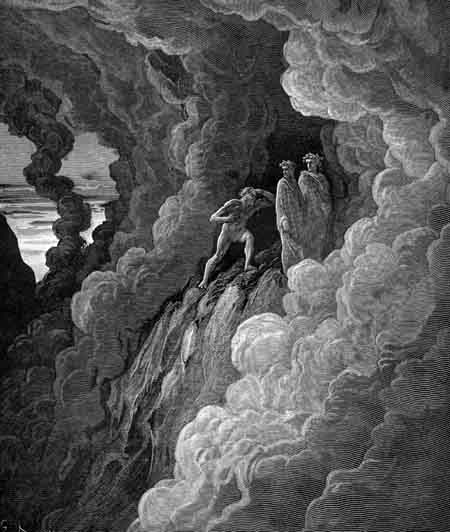

Canto XVIA fumaça - Cornija dos iracundos
|
|  |
| Marco Lombardo na cornija dos iracundos. Ilustração de Gustave Doré (século XIX). |
- Por minha fé - respondi - vou me empenhar em fazer o que me pedes. Mas tenho uma dúvida, que talvez possas tu me esclarecer. O mundo anda deserto de virtudes e infestado de maldades. Alguns dizem que tudo é vontade dos céus. Outros acham que é culpa dos homens. Conheces a verdadeira causa de tudo e sua origem? Dize-me, se souberes, para que eu possa revelar a verdade aos outros.
- Irmão - começou, com um suspiro de pesar - o teu mundo é cego. Vós que viveis atribuís tudo à influência dos astros, como se tudo fosse movido por eles e só por eles. Se assim fosse, não haveria livre arbítrio nem haveria sentido no júbilo ou no luto, pois nada seria evitável. O céu inicia vossos movimentos, mas não todos. Porém mesmo que assim fosse, ainda seríamos responsáveis, pois nos é dada a luz para distinguir o bem do mal. Natureza melhor e mais poderosa vos rege: a que é criada por vossas mentes, e que o céu não controla. Logo, se o mundo hoje perdeu o rumo, buscai a causa em vós e não nos astros, pois é em vós que ela está! Agora te explicarei a causa de toda esta falta de rumo. A jovem alma, surgida das mãos do criador, nasce pura e inocente, acreditando em tudo e em todos. Convém que haja portanto leis a serem seguidas e um rei capaz de pelo menos discernir as torres da cidade verdadeira. As leis estão aí mas quem as rege? Ninguém! O pastor encarregado de vos guiar corrompe a lei e vos arrasta para o abismo. Roma tinha dois sóis. Um mostrava a estrada de Deus, o outro mostrava a estrada do mundo. Mas um Sol apagou o outro e agora a igreja se uniu à espada, e desde então, um não teme mais o outro. Nas terras do Pó e do Adige se encontrava cortesia e virtude antes dos tempos de Frederico. Só restaram três velhos justos: Conrado da Palazzo, o bom Gherardo e Guido da Castello. A igreja de Roma que fundiu os dois poderes, agora afunda na lama, levando junto seus líderes e toda a sua carga.
- Ó Marco - disse eu - são bons teus argumentos. Agora entendo porque os filhos de Levi foram também excluídos da herança. Mas quem é esse tal de Gherardo do qual falaste agora há pouco?
- Mas como? Não conheces o bom Gherardo? - perguntou ele, surpreso - Eu não sei seu sobrenome, apenas que tem uma filha chamada Gaia. Que Deus esteja convosco, pois agora eu terei que ir. Vê os raios de luz que clareiam a fumaça. É o anjo que se aproxima e devo partir antes que ele me veja.
Ele se foi, e não quis mais me ouvir.